Rockwell Automation Studio 5000
Import EDS File
Import the EDS Files with “EDS Hardware Installation Tool”.
|

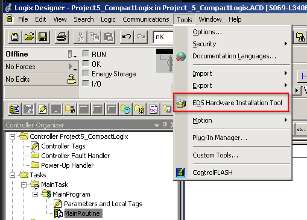
|
Navigate through the Installation Wizard and Register an EDS File(s).
|

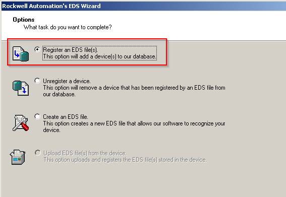
|
Select “Register a directory of EDS Files” and browse to the folder which contains the EDS Files.
Follow the next steps for installing the files.
|

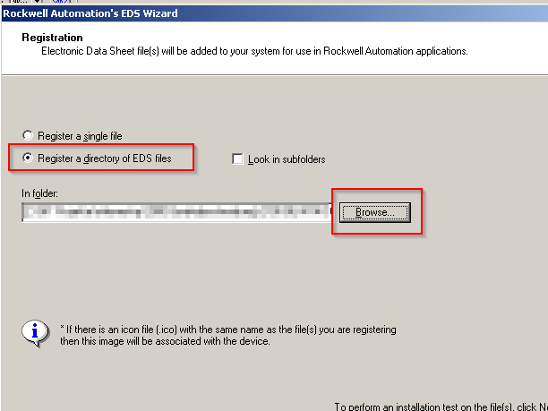
|
Hardware Configuration
There are two ways to configure the hardware. First way is to discover the modules. For this connect to the UPS
and right click on the Ethernet Connection of the PLC. Choose “Discover Modules” and scan the network for the UPS.
|

|
Select the previously set IP address and check if the shown Ordernumber matches to the UPS. Click on “Create”
and add the UPS to the Hardware configuration.
|

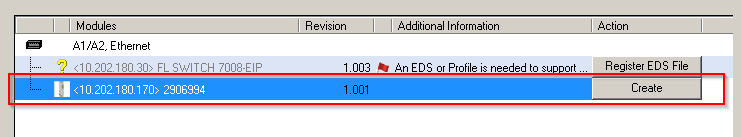
|
Name the UPS “QUINT4_UPS_EIP”, configure the previously set address to the UPS.
|

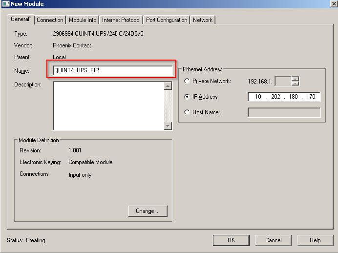
|
Second way to configure the hardware is to add the UPS with the module catalog. Right click on Ethernet
Connection and select “New Module”.
|

|
Search for the correct QUINT4 UPS and click on “Create”.
|

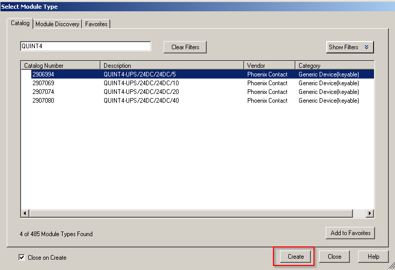
|
Name the UPS ” QUINT4_UPS_EIP” and configure the previously set IP address.
|

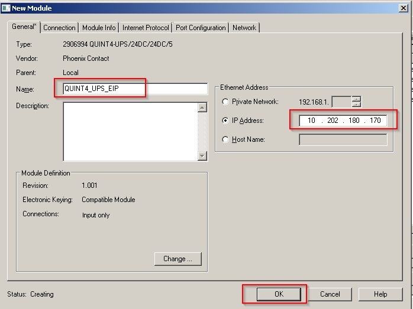
|
Software Configuration
AddOn Instruction PS_Q4_DcUpsEIP_Implicit
This AddOn Instruction decodes cyclically transmitted data of the UPS and provides them to the user in a readable form.
|

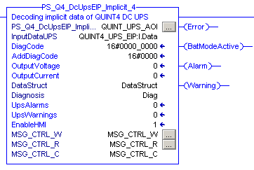
|
Inputs
Name |
Type |
Description |
|---|---|---|
EnableHMI |
BOOL |
TRUE: Enables communication with faceplates |
Outputs
Name |
Type |
Description |
|---|---|---|
Active |
BOOL |
TRUE: AOI is active |
Error |
BOOL |
TRUE: An error has occurred. For details refer to DiagCode and AddDiagCode. |
DiagCode |
DINT |
Diagnostic Code. Refer to Diagnostic table |
AddDiagCode |
INT |
Additional Information on Diagnostic Code. Refer to Diagnostic table |
BatModeActive |
BOOL |
TRUE: Mains Failure, UPS is in Battery Mode. |
Alarm |
BOOL |
TRUE: An alarm has occured |
Warning |
BOOL |
TRUE: A warning has occured |
OutputVoltage |
INT |
Output voltage of UPS in mV |
OutputCurrent |
INT |
Output current of UPS in mA |
UpsAlarms |
DINT |
Alarm bits of UPS. Refer to Alarm table. |
UpsWarnings |
DINT |
Warning bits of UPS. Refer to Warning table. |
InOuts
Name |
Type |
Description |
|---|---|---|
InputDataUPS |
SINT[58] |
Process data from UPS. BYTE array with the limits 0 to 57 |
DataStruct |
PS_udtDataStruct |
Structure of UPS specific data. Refer to Appendix |
Diagnosis |
STRING[32] |
Alarm messages from the UPS. STRING array with the limits 0 to 31 |
MSG_CTRL_C |
PS_udtMSGCtrl |
Structure of communication parameters |
MSG_CTRL_R |
MESSAGE |
MSG AOI for reading parameters |
MSG_CTRL_W |
MESSAGE |
MSG AOI for writing parameters |
Diagnostic
Diagcode |
AddDiagCode |
Description |
|---|---|---|
16#0000 |
16#0000_0000 |
The addon instruction is not active. |
16#8000 |
16#0000_0000 |
The addon instruction is active, no errors detected. |
Alarms
Bit |
Description |
|---|---|
0-1 |
Reserved |
2 |
Overload cutoff |
3-4 |
Reserved |
5 |
Internal fault |
6 |
Battery technologies different |
7 |
Battery capacities different |
8 |
Battery capacity test negative |
9 |
Battery capacity too high |
10 |
Battery capacity too low |
11 |
Temperature drop between batteries too high |
12 |
Battery quality check negative |
13 |
Battery end of lifetime reached |
14 |
No battery detected |
15 |
Reserved |
16 |
Replace Battery |
17-31 |
Reserved |
Warnings
Bit |
Description |
|---|---|
0 |
Any user counter exceeded |
1 |
User threshold battery voltage exceeded |
2 |
User threshold SOC [%] low exceeded |
3 |
User threshold SOC [min] low exceeded |
4 |
Battery mode active |
5 |
Capacity test active |
6 |
Shutdown Event triggered |
7 |
Service Mode active |
8-31 |
Reserved |
Startup instructions
Open the “MainRoutine” or a Subroutine. Right click on the routine and select “Import Rungs”.
|

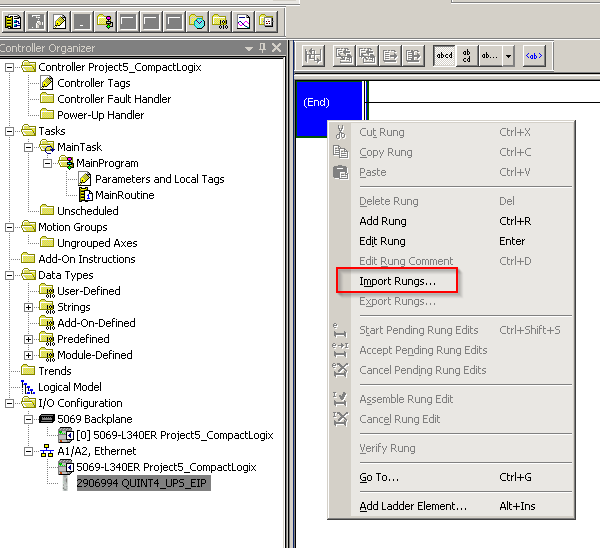
|
Navigate to the downloaded AddOn Instruction and import the “.L5X file.
|

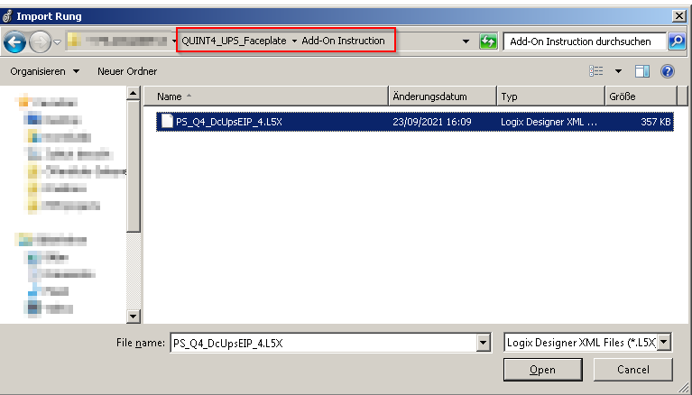
|
After successfully imported the rung the AOI should appear like shown below. The preconfigured “InputDataUPS” is
set to the Name “QUINT4_DC_UPS”. It should match to the Name of the UPS which was set in the Hardware configuration.
|

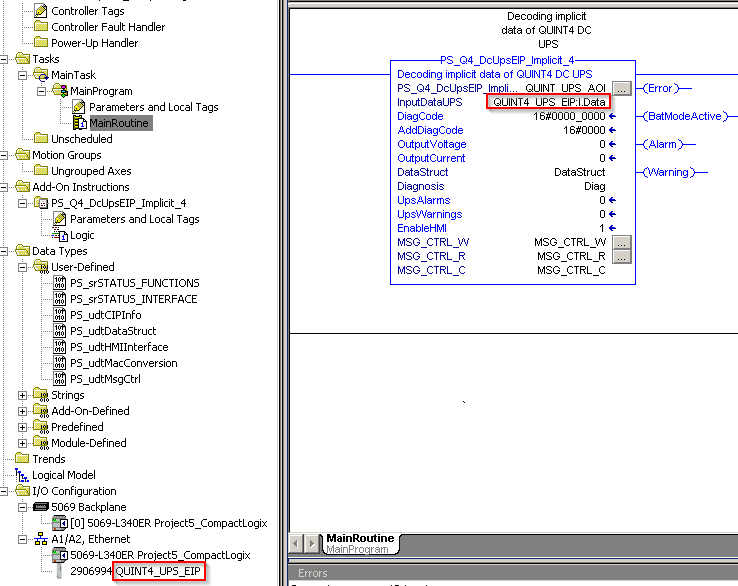
|
Compile the project and download it on the PLC. After running the system the current values of the UPS
are shown in the output structure “DataStruct”.
|

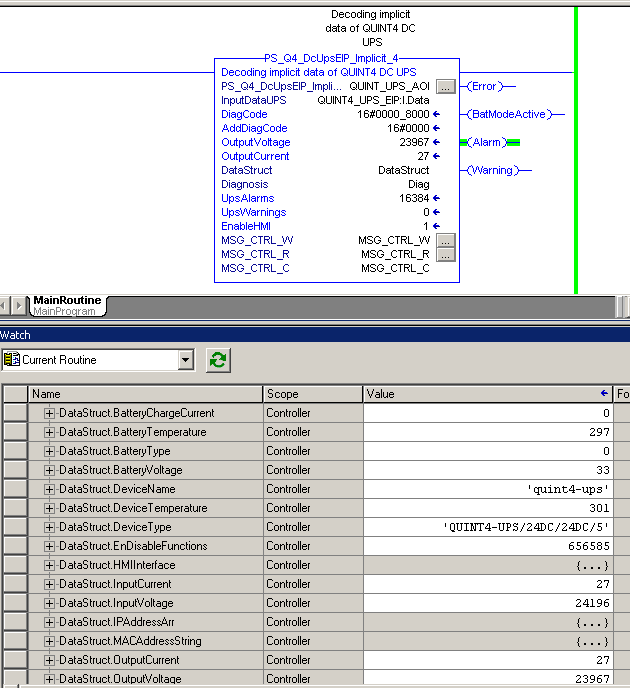
|
Appendix
DATA TYPES
PS_srSTATUS_FUNCTIONS
Tag |
Type |
Description |
|---|---|---|
xStartUpActive |
BOOL |
Device is starting |
xMainPowerModeActive |
BOOL |
Device is in mains mode |
xBatteryModeActive |
BOOL |
Device is in buffer mode |
xOutput |
BOOL |
Output of device is on/off |
xBoost |
BOOL |
Device is in boost mode |
xBatteryComActive |
BOOL |
Communcation to batteries is active/inactive |
xStatusBatCom |
BOOL |
Status com to batteries: 0=adressing, 1=normal communication |
xAutonomicStart |
BOOL |
Autonomic start input is open/closed |
xBatteryComActive |
BOOL |
Communcation to batteries is active/inactive |
xRemoteConnected |
BOOL |
Remote DI connected/disconnected |
xRemoteEnabled |
BOOL |
Remote is enabled/disabled |
xPSinBoostMode |
BOOL |
Power supply is in boost mode |
xPhoenixAddCharger |
BOOL |
Phoenix Contact additional charger is connected |
xServiceModeActive |
BOOL |
Device is in service mode |
xBatDelay1Active |
BOOL |
Battery mode delay time 1 is active |
xBatDelay2Active |
BOOL |
Battery mode delay time 2 is active |
xBatDelay3Active |
BOOL |
Battery mode delay time 3 is active |
xExternalCharger |
BOOL |
External charger active/inactive |
xBufferReady |
BOOL |
Connected energy storage is ready to buffer |
xButtonUse |
BOOL |
Service button enabled/disabled |
xSelectorSwitchUse |
BOOL |
Selector switch enabled/disabled |
xSystemTest |
BOOL |
System test active/inactive |
xBatCapTest |
BOOL |
Battery capacity test active/inactive |
xBatteryPresent |
BOOL |
Energy storage connected/disconnected |
xSOC_Initialized |
BOOL |
State of charge initialized |
xTriggerLogData |
BOOL |
New log data available |
PS_srSTATUS_INTERFACE
Tag |
Type |
Description |
|---|---|---|
xDO1 |
BOOL |
DO1 is active/inactive |
xDO2 |
BOOL |
DO2 is active/inactive |
xDO3 |
BOOL |
DO3 is active/inactive |
xDI1 |
BOOL |
DI1 is active/inactive |
xDI2 |
BOOL |
DI2 is active/inactive |
xDI3 |
BOOL |
DI3 is active/inactive |
xModeSelector1 |
BOOL |
mode selector switch 1 |
xModeSelector2 |
BOOL |
mode selector switch 2 |
xModeSelector3 |
BOOL |
mode selector switch 3 |
xModeSelector4 |
BOOL |
mode selector switch 4 |
xSwitchPressed |
BOOL |
Service button pressed/not pressed |
xGreenLED |
BOOL |
Green LED is on/off |
xYellowLED |
BOOL |
Yellow LED is on/off |
xRedLED |
BOOL |
Red LED is on/off |
xBargraphRed |
BOOL |
Red bargraph LED is on/off |
xBargraphGreen1 |
BOOL |
Green bargraph LED 1 is on/off |
xBargraphGreen2 |
BOOL |
Green bargraph LED 2 is on/off |
xBargraphGreen3 |
BOOL |
Green bargraph LED 3 is on/off |
xBargraphGreen4 |
BOOL |
Green bargraph LED 4 is on/off |
xBargraphGreen5 |
BOOL |
Green bargraph LED 5 is on/off |
xSFB_Input |
BOOL |
SFB input is active/inactive |
PS_udtDataStruct
Tag |
Type |
Description |
|---|---|---|
srSTATUS_FUNCTIONS |
PS_srSTATUS_FUNCTIONS |
Collection of status signals |
srSTATUS_INTERFACE |
PS_srSTATUS_INTERFACE |
Collection of interface signals |
InputVoltage |
INT |
UPS input voltage in mV |
InputCurrent |
INT |
UPS input current in mA |
OutputVoltage |
INT |
UPS output voltage in mV |
OutputCurrent |
INT |
UPS output current in mA |
BatteryVoltage |
INT |
Battery voltage in mV |
BatteryChargeCurrent |
INT |
Battery charge current in mA |
BatteryTemperature |
INT |
Battery temperature in K |
DeviceTemperature |
INT |
Device temperature in K |
SocRemainingTime |
DINT |
Remaining time in seconds |
SocRemainingTimePC_Shutdown |
DINT |
Remaining time until PC shutdown [s] |
BatRemainingLifetime |
DINT |
Remaining lifetime in days |
PS_udtMsgCtrl
Tag |
Type |
Description |
|---|---|---|
CIPInfo |
PS_udtCIPInfo[30] |
Array of CIP object information |
CIPInfoSize |
DINT |
Size of CIP Information array |
CIPInfoCount |
DINT |
count of actual CIP object information units |
readBuffer |
SINT[50] |
Read MSG data buffer |
readFlag |
BOOL |
Read MSG active flag |
readIdx |
DINT |
Read index for cip object iteration |
writeBuffer |
SINT[50] |
Write MSG data buffer |
writeFlag |
BOOL |
Write MSG active flag |
writeTrigger |
BOOL |
Write MSG trigger |
writeIdx |
DINT |
write index for cip object iteration |
PS_udtMacConversion
Tag |
Type |
Description |
|---|---|---|
idx |
DINT |
MAC address conversion index |
tmpSINT |
SINT |
Temporary working tag (full nibble) |
tmp |
SINT |
temporary working tag (half nibble) |
nibbleSINT |
SINT[2] |
Nibble decimal array |
nibbleIdx |
DINT |
MAC address nibble index |
PS_udtCIPInfo
Tag |
Type |
Description |
|---|---|---|
Class |
DINT |
CIP object class |
Instance |
DINT |
CIP object instance |
Attribute |
DINT |
CIP object attribute |
Length |
DINT |
CIP object source length |
ReadWrite |
DINT |
1=Read, 2=Write, 3=ReadWrite |
PS_udtHMIInterface
Tag |
Type |
Description |
|---|---|---|
MainMenu |
SINT |
Main menu index |
Submenu_Bat |
SINT |
Battery submenu index (not used) |
SubMenu_Diag |
SINT |
Diagnosis submenu index |
SubMenu_Mon |
SINT |
Monitoring submenu index |
Btn_BatCharge |
BOOL |
Button - toggle battery charge function |
Btn_ModSelSwitch |
BOOL |
Button - toggle mode selector switch function |
Btn_UseChargeCurrent |
BOOL |
Button - charge current from Bat Com or User |
Inp_ChargeCurr |
REAL |
Input - charge current[A] |
Wrk_ChargeCurOld |
REAL |
Working - last set charge current [A] |
Wrk_ChargeCur_mA |
DINT |
Working - charge current [mA] |
Lim_ChargeCurMin |
REAL |
Limit - charge current input min [A] |
Lim_ChargeCurMax |
REAL |
Limit - charge current input max [A] |
Inp_UsrSysName |
STRING32 |
Input - user system name |
Wrk_UsrSysNameOld |
STRING32 |
Working - last set user system name |
Inp_UsrDevName |
STRING32 |
Input - user device name |
Wrk_UsrDevNameOld |
STRING32 |
Working - last set user device name |